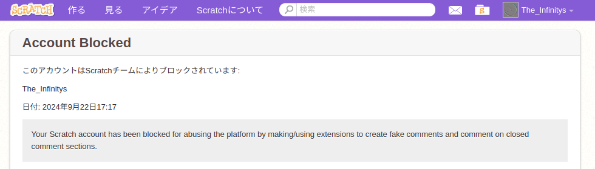

Scratch からブロックされました(´∞ω∞)
どうも、The Infinity’s です。
今回、凄く大事なお話が有ります。
単刀直入に言います。
Scratch からブロックされました。

過去類を見ない理由です。
Your Scratch account has been blocked for abusing the platform by making/using extensions to create fake comments and comment on closed comment sections.
(´∞ω∞)
解除申請は送りました。
文章の内容
Subject: Request for Account Unblock and Pledge to Contribute to the Scratch Community
Dear Scratch Team,
I am writing to express my sincere apologies for the recent blocking of my Scratch account.
I received a notification stating, “Your Scratch account has been blocked for abusing the platform by making/using extensions to create fake comments and comment on closed comment sections.”
I have been learning programming primarily using JavaScript/TypeScript and also Python. I created a Scratch extension called “Scratch Comment Emulator” with the intention of deepening my understanding of programming by expanding Scratch’s functionality. However, during the testing phase for this extension, I engaged in actions that violated the platform’s terms of service by emulating comments, which I deeply regret.
I want to assure you that my actions were solely motivated by a desire to learn programming and were not intended to harm or disrupt the community in any way.
I understand that my actions violated Scratch’s terms of service and caused inconvenience to other users and the community as a whole. I am truly sorry for this. Going forward, I will strictly adhere to Scratch’s terms of service and community guidelines. As soon as my account is restored, I will promptly remove the “Scratch Comment Emulator” extension from Scratch and continue my programming studies with greater care for the community.
Scratch has been a valuable platform for me to learn and enjoy programming. I am eager to continue expanding my programming knowledge and creating more innovative projects. In the future, I hope to use my skills and knowledge to contribute to the Scratch community by developing extensions or projects that benefit other users.
I kindly request that you reconsider my account blocking.
Sincerely,
The Infinitys
2024/09/23
 Copy To ClipBoard
Copy To ClipBoard
 Share On X
Share On X